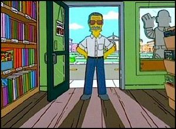

Marvel
 De: La Frikipedia, la enciclopedia extremadamente seria.
De: La Frikipedia, la enciclopedia extremadamente seria.
| De la serie Literatura para todos:
|
| Marvel
|
|
|
| Si no compras,¿Sabes lo que te espera?
|
|
| Creador
|
Stan Lee Joven
|
| Época
|
Del caldo
|
| Estilo
|
Friki
|
| Idiomas usados
|
Todos incluyendo el Psyduck
|
| Estructura
|
aracnida
|
| Dificultad
|
no le entiendes nada pero los dibujitos molan
|
| Notas
|
enemigo de DC,Bongo comics y Dark Hourse
|
«Creo que es una gran oportunidad para vivir en billetes y ser aun mas rico antes de morir»
~ Stan Lee sobre su venta a Disney
«Me estiro tanto como un pene»
~ Reed Richards sobre el mismo
«¡No quiero convertirme en un viejo verde...!»
~ Julk acerca de algo inevitable.
«...»
~ Ferb sobre marvel
Marvel es una malvada Kilo,se ha extendido a otros medios como al cine donde podras ver la version del titanic con Batman y Robin(mierda si esos son de DC) es decir con Iron Man y Hulk poniendose raritos.Y rescatando al soldado capitan america,y ahora por tiempo limitado series mierdosamente horribles como super hero squad o Wolverine adolescente.Sin mencionar videojuegos como GTA:Episodes from Dr. Strange.
Historia y un poco mas
X-Men Origins: Marvel
Antes de ser propiedad de la compañia maligna llena de hijos de puta orejones ,todo comenzo como un joven viejo que dibujaba en clases,como un idiota que desperdicio su niñe y adolesencia leyendo comics medio idiotas,durante su juventud Stan Lee la usó para dibujar en sus clases,leer Cómics,comer cómics,vivir Cómics,ser el cómic, Stan Lee era un pobre friki que todos golpeaban pero cuando se volvio rico mando a sus heroes a golpear a los brabucones, los profesores como Reed Richards y el profesor Xavier sin mencionar al profesor de Fisica el Dr. Strange le propinaban golpizas saliendo de clases,lo reprobaban y lo violaban.
Como guionista trabajó en el periódico escolar El Clarin.En una excursion escolar unos rayos gamma lo dañaron hasta quedar casi muerto y ciego al despertar empezo a delirar y de ahi sus creaciones. Empezo con 4 fenomenos ,los cuales tenian un traje de superman modificado y luego a la espaiderman el putazo. Y junto con Jonah Jameson evoluciono el clarin ya que a los lectores solo les gustaban los comics y asi nacio Marvel.
Los años 50’s
La empresa recien comenzaba,aun faltaba mucho por Hacer mientras se comia pizza y Stan ya temia el viejazo
Spiderman en una fiesta en la casa de
CJ.
Los 60’s
La década que siguio estuvo triunfos,Estan Le,Peter Parker y Jack Kirby crearon muchas subnormalidades y lo que pasria a ser los subnormales de los cómics del mañana: los 4 fantásticos,Hulk:el viejo verde,Bob Esponja y el amigable vecino Spiderman.La compañía intentó retornar al género de superhéroes que había sido revitalizado con gran éxito por su rival DC Comics unos años antes. Crearon entonces Los 4 Fantásticos inspirándose en los éxitos de DC Comics (flagiadores) y en las historias de monstruos que Atlas mundial publicaba. Por eso marvel es un flagio de Thor,Batman y los velociraptors.Los delfines intentaron hacerse con la compañia en este año.
 Stan en uno de sus cameos en una de sus peliculas mas famosas:
The Simpsons Movie.
Los 80’s
Marvel había adquirido un gran número de compañías multinacionales, entre ellas a DC Comics, a Disney,Pokemon company entre otros. Pero las pelis de Volver al futuro,Superman, la trilogia original de Star Wars, Walt Disney,Terminator y Ghost la sombra del amor frenó este proceso, por ello hicieron un crossover con DC,publicaron los comics de Star Wars y Michael Jackson.
2000 al 3000 o la actualidad
Empezaron a producir películas y muñequitos articulables a los que se les caian los brazos.DC declaro la guerra contra Marevl.
Stan Lee ya no hace nada,los pesonajes mueren y reviven con viajes en el tiempo.Muchas palabras menos golpes.
El universo marvel se unio al Disney.El proximo paso de Disney es comprar YouTube dominando el mundo.
Spiderman vigilando Nueva York
La batalla final de Xavier contra wolverine:A wolverine le gusta burlarse de los discapacitados.
Hulk paseando por el bosque del cojon.
Superheroes:Los que evitan la bancarrota
- Iron Man:conocido como el hombre plancha, o el hombre de acero (no confundir con Superman) es un hombre blanco rico tambien conocido como Toñito Stark,es un millonario con guarida secreta,sin ningun poder mas que el del dinero(plagiada de Megaman y Batman) . Quizá el millonario más borracho y mugeriego de todo el universo de Stan tambien fue parte de un ataque terrorista.
- X-Men :Los X-men (Hombres X) son un equipo de mutantes y deformes desgraciados hjos de puta(¿por que nacieron?),odiados por Todo el mundo al contrario de los 4 fanaticos y spiderman los cuales son queridos(por ellos los
seX men les tienen envidia) protegen a la poblacion,si a la población normal y corriente que los odian tanto e hicieron una turba furiosa para derrotar a los Xmen incluyendo a Wolverine y Dracula.
- nuclear y no detuvo el despege haciendo que Bruce se pusiera verde del coraje.Se dice que tiene 0.00000000000000000000000000000000000000001 del poder de Chuck Norris.
- AAA y La WWE, a spidy le toca peleear contra Big Show. Al ganar todos lo abuchean y le lanzan Hot dogs frios sin mostaza, para colmo no le pagan y matan a su Tio Ben (esto ultimo fue lo menos feo).Spiderman decide echar su vida a la mierda para siempre creando lanzarredes que salen de su ano ,algo que sólo podría haber creado un experto en química como por ejemplo, Peter Parker, patrulla Nueva York,edita la frikipedia y ve Drake y Josh en sus ratos libres,en vez de hacer tarea,Peter fue pobre y desgraciado para siempre.
- El chapulín colorado:Todo empezo cuando al Chavo del 8 le pico un chapulín radiactivo en una demostración científica del profesor Jirafales ,muchos dicen que no es propiedad de Marvel pero solo es un rumor.
- El Doctor Extraño mejor conocido como Dr.Strange: Dicen que stan lee se basó en un héroe de su infancia, pero en realidad, fue el propio Doctor Extraño el que le transmitió a Stan Lee, con ondas mentales paranoicas, la orden de dedicarle un cómic.El Dr. Starge es un señor my extraño y respetable con bigote que enrealidad jamas obtuvo doctorado.
Howard el Pato:Heroe heroicamente bueno,mas temido por moordor y escorpion,de el fue la primera pelicula marvel dirigida por el mitico George Lucas y Stan Lee,en vez de que Lucas se pusiera a trabajar con Star Wars o Indiana Jones y Lee con Ghost Ryder o Hulk hicieron esta buena pelicula.
- Peter Parker:Extrañas apariciones en la historieta de spiderman,no se sabe que tiene que ver con el aracnido mas ser su paparatsi gay,se sabe que es putazo,que a su padre lo mato una Tio Ben 10 murio.
- Mr. Fantástico :El líder del grupo fantastico, todo un nerd que no jugba futbol en la escuel primaria, su principal unico y eterno poder es estirarse y lograr escapar por debajo de las puertas para espiar, la mujer invisible es feliz a la hora del sexo. A veces también se puede hacer un paracaídas, un camisón, un paraguas,unas tijeras y otras formas que ayudan a mantener el mundo a salvo,tiene canas a corta edad,es influencia principal de la pelicula de los increibles .
- La mujer invisible:Esposa de Mister Fantástico y amante de Namor rey del mar, pero esto obviamente Richards no lo sabe,de echo han follado mientras Reed esta en el edificio Baxter leyendo el voletin semanal de ciencias.Su unico poder es hacerse invisible,Stan lee se inspiro en una novia imaginaria para crearla.
- La antorcha humana:Un adolescente desesperado de unos 18 o 19 años. El pobre no puede tener una relación decente ya que cada vez que se excita se convierte en fuego. Y claro, sus novias no son a prueba de fuego.Ya que no usa mascara,lentes,mayas o cualquier cosa que cubra su identidad nadie sabe quien es,muchos aseguran que es Johnny Test,ya que tiene peinado de flama,ademas de Mr.fantastico le dice Yohnny y tiene una hermana llamada susan.
- Ghost Rider: O en america latinoamericana El Vengador Fantasmal, es un motociclista que forma grupo del GTA episodios de liberty cyty,el medio copia de la antorcha humana ,acróbata de circo; tambien practica el oscurantismo,rituales diabolicos y escucha Jebi Metal, todos huyen al verlo incluyendo a los malos y a los buenos.Le es dificil ya que incluso Darth Vader,Darth Maul,el diablo,Frank,Vicky y Reese
- La mole con pollo:Cosa subnormal,al que todos huyen al verlo,conocido como la mole el que mola o el guapo Ben Grimm,tipico heroe al que todos huyen al verlo,se dice que puede ser el mas fuerte,ha luchado contra Hulk,la antorcha humana,su novia,Reed,Chuck Norris,Ash Ketchum,Indiana Jones y Bear Grylls.Aunque siempre pierde,y mata a todas sus novias en el acto.
- Xavier :Exceiber es un calvo lider de los mutantes X y un club de aficionados al dinero,quedo en silla de ruedas al follar en la infancia con su amante She Hulk o bien Hulka,por ello fue al teleton toda su vida.
- Ojo de Halcon:Vengador de traje moradito,con un extraño parecido a Robin Hood,amante de SheHulk y Hulk.
- She Hulk :Hermana sexy de Hulk que sirve muy bien para el hentai,es muy verde.
Villanos:Los malos del cuento
- El duende verde: Un idiota-genio loco con mucho dinero y aficionado a las drogas al que le gusta del buen vino,la literatura y el robo a bancos apezar de ser rico. El traje se unio a el al igual que Veneno comvirtiendose en su verdadera piel.No se debe confundir con link.Tiene un planeador,calabazas echadas a perder que explotan y un gorrito en algunas versiones,solia trabajar para Santa Claus.Su mundialmente risa histérica y ridícula hace que todo paresca gracioso por eso fue el invitado de honor en la fiesta de globitos de la pelicula.En la actualidad es un adicto a el crack y la super-heroina.Y si lo notas es el unico villano que aparece en las 3 spidermovies.
- El Nuevo Duende: Es el hijo de el duende verde,solo que con un estilo mas inc a lo matrix
- Veneno: Su vida comienza cuando los 4 fantasticos regresan a la tierra,chocando pacificamnete estrellando su nave en Nueva York.Peter se lo encontro y descubrio que volvia negra la ropa,como los emos estaban de moda se lo llevo y decidio ponerselo a su mejor y unico traje.
Rid Richards con la fiebre amarilla.
- Rhino: Un feo en traje de rinoceronte. Es afeminado, y siempre termina con su cuerno y el pito atascado en algo.(en una pared).Se necesitan horas de trabajo de parte de la policia para sacar al buen cuidadano que nos quiere librar del horrible trepamuros.
- Misterio:Un sujeto con una pecera en la cabeza que trabajaba en la compañia de Marvel Movies pero lo desidieron por los horribles efectos en Howard el pato,asi que solo por ese minusculo detalle se unio al MAL.Se le conoce también como Rey Misterio.
- King Pin: "El Rey del Crimen", El gordo pelon enemigo de Spidy y Daredevil,su mayor poder es la gordura,en la peli de Daredevil es un negro.

Iron man despues de la parranda.
- Doctor Doom :El mas maloso del mundo Marvel quien incluso ha controlado a Galactus,su mayor poder es el de intimidar con su inponente cara,su platillo favorito son los tacos de caca.
- Galactus :Nube negra que predice lluvia.Siempre viene anunciado por Silver Surfer.
- El hombre Topo :Personaje excluido de la sociedad propiedad de los Simpson y Marvel Comics
- Magneto :Se volvio enemigo de los mutantes cuando se burlo de ellos en una fiesta osea bien X,men.
- Skrulls :Marcianos que llegaron ya,y llegaron bailando el Chachacha,se apoderan de los cuerpos y ya lo hicieron con:Los 4 fantasticos,spiderman,Thor,Michael Jackson y Shakira.
Galeria de arte abstracto
Spiderman apunto de ser traicionado por Veneno
La mujer invisible o Susan Storm desnuda!
Johnny Storm:Mejor conocido como la antorcha humana solo mira su cabello
El Dr. Strange en la comic con
Wolverine pidiendo ayuda a un gilipollas que le rasque sus cojones porque sus garras son afiladas, si el mismo se las rasca, ya saben
Datos curiosones
- Spiderman tuvo un crossover con E.T en 1980
- Spiderman es putazo
- Bill Gates se limpia el culo con comics marvel
- Walt Disney secuestro a Stan Lee
- Wasp y Ant Man follan de una peculiar manera y Wasp siempre muere
- Lizaro es la mascota de 3°"b"
- Civil War jamas ocurrio
- Marvel zombies si ocurrio
- Howard el pato se apellida Wolowitz, es hermano del pato Donald y primo del pato pascual.
- IP anónima es un skrull
- Iron man le metio el pito a IP anónima
Véase también
Autor(es):
- Fordus
- Genericool
- Volver al futuro 2
- Frikisexigirl!!!
- Generibot
- Calipsisxdomega
- DaisukeWWF05
Frikipedia 2005-2016, Licencia
GFDL 1.2 - Extraído por FrikiLeaks